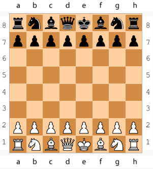
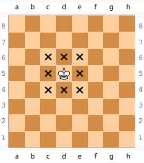
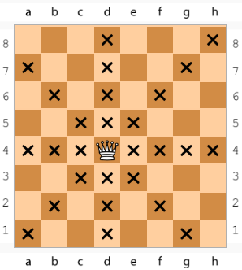
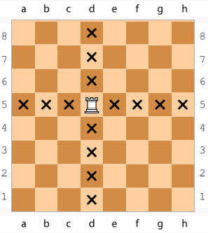
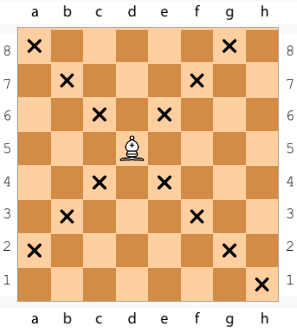
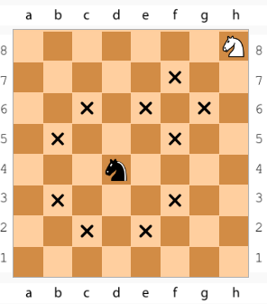
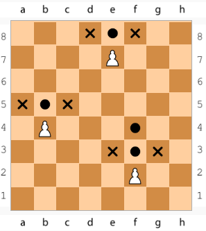
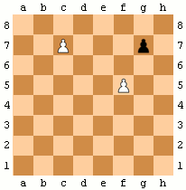

Játékszabályok
A Sakk tábla
A sakkot két játékos játssza egy 8×8-as táblán, összesen 64 mezővel. Mindkét fél 16 bábuval rendelkezik, eltérő színekkel.

A játék célja
A cél mattot adni az ellenfél királyának – vagy időre menő játszmákban kifuttatni az ellenfél idejét. Matt akkor van, ha a király sakkban áll és nincs szabályos lépése a védekezésre.
A bábúk
Király
Bármely irányba léphet 1 mezőt. Nem állhat közvetlen az ellenséges király mellett.

Vezér
Egyenes és átlós irányban is bármennyi mezőt léphet.

Bástya
Vízszintesen és függőlegesen lép. Részt vehet a sáncolásban.

Futó
Átlós irányban mozog, ameddig nincs akadály előtte.

Huszár
Lóugrásban közlekedik: 2+1 mező. Ugrik a figurák felett.

Gyalog
Előre lép, de átlósan üt. Először 2 mezőt is léphet, átváltozás a végén.

Különleges lépések
Sáncolás
A király és a bástya egyszerre léphet egy speciális szabállyal.
- A király és bástya még nem lépett.
- Közöttük nincs figura.
- A király nem áll és nem halad át sakkban.

En Passant
Ha egy gyalog 2 mezőt lép és áthalad az ellenfél ütésvonalán, a következő lépésben kiüthető.
